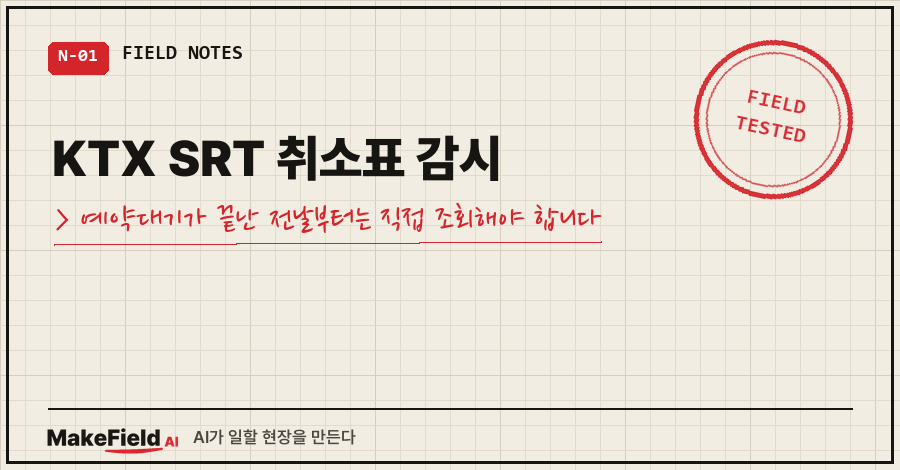
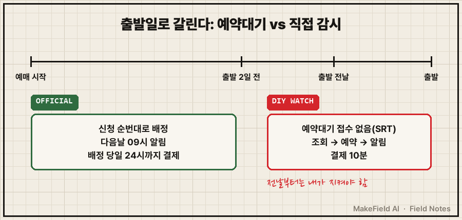
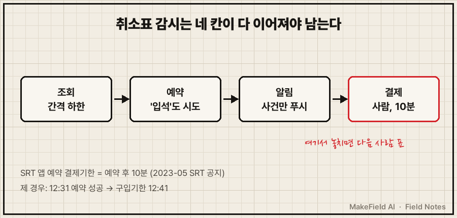
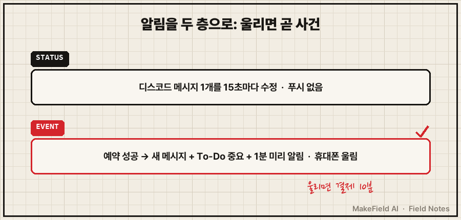

KTX SRT 취소표 감시는 출발 2일 전까지는 공식 '예약대기'에 맡기고, 예약대기가 닫힌 전날부터는 직접 조회하는 게 맞습니다.
SRT는 출발 2일 전까지 매진 열차에 예약대기를 받고, 출발 1일 전부터는 접수하지 않습니다. 배정 결과는 다음 날 오전 9시에 알림으로 오고, 배정 당일 자정까지 결제해야 합니다. (SRT 공지 원문, 2020-03-10 등록)
제가 직접 감시 프로그램을 돌린 건 2026년 8월 17일, 다음 날 새벽 SRT 표를 구할 때였어요. 출발 전날이라 공지 기준으로는 예약대기 대상이 아닌 날이었습니다. 281번 조회 끝에 잡았고, 그 과정에서 '감시'가 조회만으로는 끝나지 않는다는 걸 배웠어요.
공장 설비 제어를 15년째 하다 보니 무언가를 계속 지켜보는 프로그램은 손에 익은 편인데요. 기차표 감시도 결국 조회, 예약, 알림, 결제 네 칸이 다 이어져야 표가 남더라고요.
1. 취소표 감시 화면에서 실제로 보이는 것
매진된 열차를 조회하면 좌석 칸에 '매진'이 뜨고, 그 옆에 '예약대기' 칸이 따로 있습니다. 코레일 안내에도 "열차 조회 결과에서 예약대기 상태의 열차 선택 시 예약대기를 신청하실 수 있습니다"라고 적혀 있어요.
직접 감시를 돌리면 로그에는 이런 상태 문자열이 반복됩니다. 아래는 제 로그에서 열차 정보와 시도 번호를 빼고 흐름만 줄여 옮긴 재구성이에요(마지막 두 줄은 61번째 조회 원문).
일반실: 매진 / 특실: 매진
일반실: 매진 / 특실: 매진
일반실: 예약가능 / 특실: 매진
[예약 실패] 잔여석없음매진, 매진, 매진.. 그러다 한 번 '예약가능'이 떠도 이미 다른 사람이 가져가 있는 경우가 많습니다. 저는 61번째 조회에서 이걸 겪었어요. 조회 간격을 어떻게 잡고 실패 직후를 어떻게 노렸는지는 부모 글에 자세히 적어 뒀습니다. → SRT 취소표 자동 예약, 1초마다 조회했더니 IP가 차단됐습니다
2. 감시를 돌려도 표를 놓치는 네 가지 원인
놓치는 지점은 조회 속도보다 그 앞뒤에 있었어요.
- 예약대기 마감을 모름: 출발 1일 전부터는 SRT 예약대기 접수가 닫힙니다. 그 전이면 공식 기능이 순번대로 배정해 주는데, 굳이 서버를 두드릴 이유가 없어요.
- 상태 문자열을 좁게 읽음: 제가 쓴 비공식 라이브러리의 좌석 판정 함수는 '입석+좌석' 상태를 빈자리로 보지 않았습니다. 앉을 자리가 섞여 있는데 감시가 그냥 지나친 거예요.
- 알림이 묻힘: 감시 현황을 매번 새 메시지로 보내면 정작 성공 알림이 그 사이에 파묻힙니다.
- 결제기한을 넘김: SRT 앱 예약은 예약 후 10분 안에 결제해야 합니다(2023-05-03 SRT 공지). 제 예약도 12시 31분에 잡혔고 구입기한이 12시 41분이었어요.

3. 취소표 감시, 이 순서로 세웠습니다
- 날짜부터 본다: 출발 2일 전 이전이면 예약대기를 먼저 겁니다. SRT는 신청할 때 알림 수신 동의와 특실 취소표 배정 여부를 직접 고르게 돼 있어요(공지 원문). 열차당 전체 좌석의 10% 순번까지만 받으니 빨리 거는 게 낫습니다.
- 전날부터는 직접 조회: 조회 간격의 하한을 코드에 박고, 차단되면 쉬게 했어요. 이 부분은 부모 글 내용 그대로입니다.
- 예약 조건을 넓힌다: '예약가능'뿐 아니라 '입석'이 들어간 상태도 예약을 시도하게 바꿨습니다. 아래는 실제 코드가 아니라 조건 구조만 옮긴 예시예요.
# 상태 문자열에 '예약가능' 또는 '입석'이 있으면 예약 시도
if "예약가능" in status or "입석" in status:
try_reserve(train)- 알림을 두 층으로 나눈다: 진행 상황은 디스코드 메시지 1개를 15초마다 고쳐 쓰는 현황판으로 두고, 예약 성공 같은 사건만 새 메시지로 보냈어요. 메시지 수정은 휴대폰 푸시가 안 오고 새 메시지만 울리니, 울리면 곧 사건입니다. 성공 시엔 MS To-Do에 중요 표시 + 1분 뒤 미리 알림까지 걸었어요.
- 결제는 사람이 한다: 카드 정보를 파일에 두기 싫어서 자동 결제는 안 붙였습니다. 대신 10분 안에 결제할 수 있게 알림을 휴대폰으로 받았고요.

| 구분 | 공식 예약대기 | 직접 감시 |
|---|---|---|
| 쓸 수 있는 때 | SRT 출발 2일 전까지(매진 열차) | 언제든, 특히 전날·당일 |
| 배정 방식 | 신청 순번대로, 다음날 오전 9시 알림 | 먼저 예약 요청한 사람이 가져감 |
| 결제 기한 | 배정 당일 자정(코레일: 배정 당일 24시) | 앱 예약 후 10분(SRT) |
| 서버 부담 | 없음 | 조회 간격 관리 필요 |
4. 감시가 제대로 도는지 확인하는 법
저는 진짜 감시를 걸기 전에 자리가 남아 있던 다른 열차 하나를 실제로 예약하고 바로 취소해 봤어요. 그 한 번으로 예약, 휴대폰 알림, 디스코드 수신까지 끝까지 이어지는지 확인했습니다.
돌아가는 동안엔 두 가지만 봤어요.
현황판 메시지: 15초마다 갱신되는가
감시 로그 파일: 3분 넘게 멈춰 있지 않은가현황판이 멈추면 감시가 죽었거나 멈춘 거예요. 로그가 멈췄을 때 자동으로 되살리는 구조는 부모 글 3절에 있습니다.

같은 증상, 다른 경우
- 조회 간격·실패 직후 30초 몰아치기·감시자 되살리기 → SRT 취소표 자동 예약, 1초마다 조회했더니 IP가 차단됐습니다
- 알림이 너무 많아서 정작 중요한 걸 못 볼 때 → AI 알림 자동화
- 감시를 예약 실행으로 걸었는데 안 돌 때 → 작업 스케줄러 실행 안 됨
자주 묻는 질문
Q. KTX도 SRT랑 똑같이 감시하면 되나요?
KTX는 제가 직접 감시를 돌려 본 적이 없어요. 제가 쓴 라이브러리도 SRT 전용이었고요. 공식 예약대기는 코레일에도 있습니다. 코레일 안내 원문은 "열차 출발 2일전의 매진 좌석에 대해 고객의 예약대기 신청순서에 따라 취소된 좌석을 배정"이고, 배정되면 당일 24시까지 결제해야 해요.
Q. 예약대기를 걸어 두고 직접 감시도 같이 하면 안 되나요?
둘은 따로 돕니다. 다만 SRT 예약대기는 출발 1일 전부터 접수 자체를 안 받으니, 전날 이후엔 직접 감시만 남아요.
Q. 감시를 돌릴 때 제일 많이 놓치는 단계는요?
제 경우는 결제였어요. 281번 만에 잡은 표도 10분 안에 결제하지 않으면 그대로 다음 사람 몫이 되거든요. 그래서 성공 알림만큼은 꼭 휴대폰이 울리게 해 두세요.
표를 잡은 건 조회 횟수가 아니라, 감시 프로그램이 알림과 결제까지 한 줄로 이어져 있었기 때문이었습니다. 지금 걸어 둔 취소표 감시가 있다면, 성공했을 때 휴대폰이 진짜 울리는지부터 한 번 시험해 보세요.
기차표처럼 생활 속 반복을 코드로 바꿔 본 기록은 makefield.ai에서 이어집니다.
출처
- SRT 승차권 예약대기 제도 운영 알림(2020-03-10 등록, 2026-10-29 확인) → https://etk.srail.kr/cms/article/view.do?pageId=TK0502000000&postNo=273
- 12일부터 SRT 승차권 결제기한 단축(2023-05-03 등록, 2026-10-29 확인) → https://etk.srail.kr/cms/article/view.do?postNo=957&pageId=KR0502000000
- 코레일톡 이용안내 '예약대기'(2026-10-29 확인) → https://smart.letskorail.com/ebizmw/mwQna.do
태그: #KTX취소표 #SRT취소표 #취소표감시 #KTXSRT취소표감시 #SRT예약대기 #코레일예약대기 #취소표알림 #기차표취소표 #취소표잡는법 #파이썬자동화 #자동화알림 #디스코드알림 #무인자동화 #자동화만들기 #MakeFieldAI